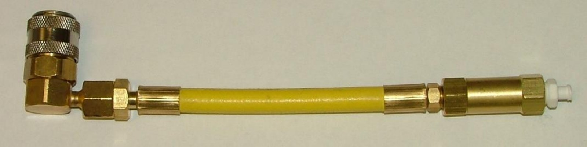
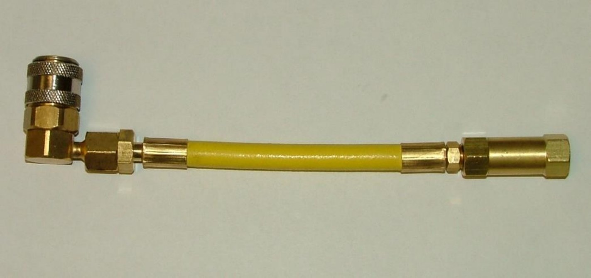
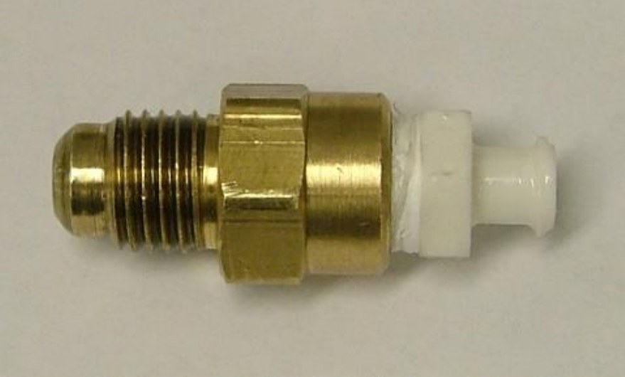

Doc no. MOC-TSB-13-12 // Vol. 13 No. 12 // Apr 9, 2013 // HVAC
Arctic Blast Injector Tool
MOC has developed a new tool to inject Arctic Blast into the A/C.
What's new
The first batch of the Arctic Blast Injector Tools were created to work with the threaded syringe and does not include the white Luer Lock fitting shown at the end of the tool above.
Future batches of Arctic Blast will come in Syringes with a Luer Lock fitting that will connect to the above Tool (Part No. 76608) through the white fitting at the end of the tool.
The picture below represents the first batch of tools created.
If you have an Arctic Blast Injector Tool that looks like the picture above, you will need the 76015 adapter to connect to the Syringes with the Luer Lock connection.
The picture below shows the 76015 Adapter.
Contact
For more information, contact the Machine & Equipment Department at 866.244.6621.



Part numbers
| Part No. | Description | Notes |
|---|---|---|
| 76008 | Tool, Arctic Blast Injector | |
| 76015 | Adapter, 1/4" Flare to Luer Lock | |
| 76608 | Above Tool |